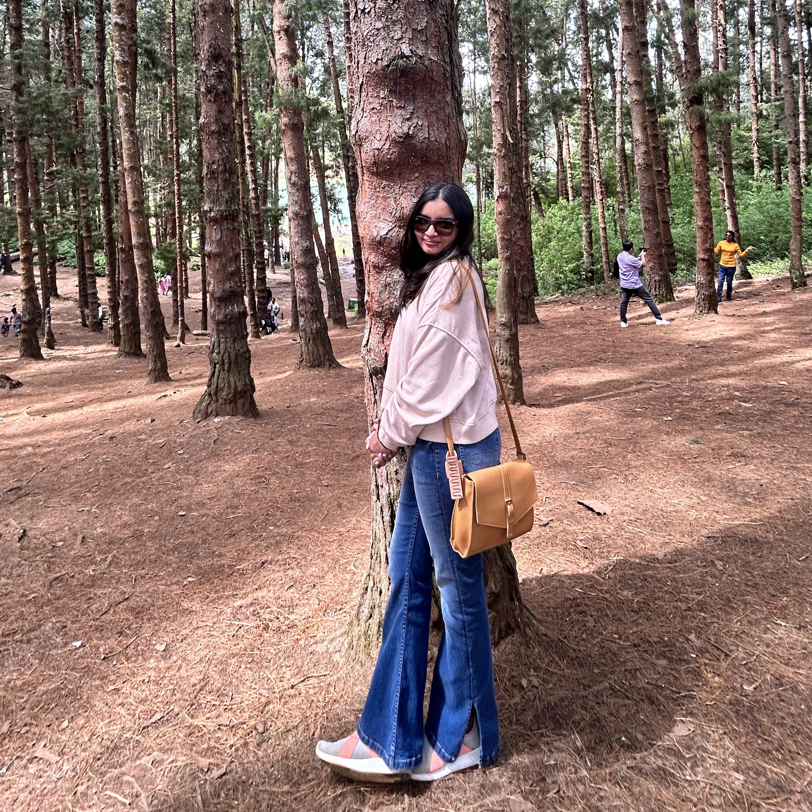

Sharanya Awasthi

LinkedIn
ABOUT ME
Currently an incoming sophomore at the University of Cincinnati, I'm deeply passionate about the intricate yet extraordinary world of Science & Technology. I love learning about the world and tackling new challenges with enthusiasm, dedication & most importantly, integrity. My commitment to giving my best efforts in every task reflects my sincere approach towards my work, education and professional development. Moreover, I am a firm advocate of teamwork. Learning from the experiences of others truly enriches my understanding and knowledge.
One of my greatest motivations for pursuing Computer Science in college is that it allows me to blend my technical skills with creativity. To me, this field opens a door full of opportunities, allowing me to design and develop codes, applications, and programs that are products of my own creativity and imagination 💌
EDUCATION:
- Bachelor of Science in Computer Science - University of Cincinnati (2023-2028)
- GPA: 3.88/4.0
- Primary Coursework:
- Calculus II
- Engineering Design Thinking II
- Computer Science I
SKILLS
- Programming Languages: Python, SQL, C++, LabVIEW, MATLAB, VBA, HTML
- Tools: Git, GitHub, MySQL, Excel, Word, PowerPoint, Visual Studio Code, Notion, DBeaver, Visual Studio, CodeLite
EXPERIENCE
- Digital Philanthropy Centre at UC Foundation - Cincinnati, OH (March 24 - Present)
- Represent University of Cincinnati as a key communicator while actively fostering and sustaining strong connections with alumni and donors, resulting in increased engagement and support for the University of Cincinnati
- Other responsibilities include using additional tools such as SMS, email, and video to support outreach efforts and working with other associates in a team-oriented environment to achieve goals.
- Raised more than $500 within two months for University of Cincinnati’s initiatives and scholarships
- Student Government President - Pune, India (May 2022 - March 2023)
- Led the school's Student Council body while playing a pivotal role in fostering a positive and collaborative school environment, maintaining discipline through the implementation of effective systems, ensuring a respectful and inclusive atmosphere for all & showcasing meticulous organizational skills
PROJECT
- Autonomous Robot Project II (Forklift Barcode Scanner) - University of Cincinnati
- Built a robot using Lego Mindstorms EV3 and Python, capable of performing various autonomous actions including sample barcode scanning and forklift pickup
- Utilized Visual Studio Code’s MicroPython Extension for programming the EV3 to successfully complete the necessary functionalities of the robot
- Autonomous Robot Project I (Waste Segregator) - University of Cincinnati
- Designed a robot utilizing Lego Mindstorms EV3 and LabVIEW, endowed with the capability to identify pre-loaded waste bins and autonomously segregate them for subsequent delivery to a predetermined destination
- Artificial Restaurant Aggregator Program - Sanskriti School, India
- Developed a customizable and user-friendly project using CSV files and Python allowing users to go through various fictitious restaurant menus, select food choices, see optional statistics, and get the final bills along with offers and other discounts in a new CSV file
- Implemented Python Libraries including PANDAS, NumPy & Matplotlib
HONORS & AWARDS
- Dean's List of Recognition (April 2024)
- CEAS Scholarship & UC Global Welcome (August 2023)
- A2 German Proficiency & Two-times Scholarship Awardee by Goethe Institute of German (March 2020)
ACTIVITIES
- CEAS Innovation Challenge
- UC Elevator Pitch Challenge
- MACKUC Hackathon
- REVUC Hackathon
- UC Circle K Volunteer
- Clean Up Cincy Volunterr